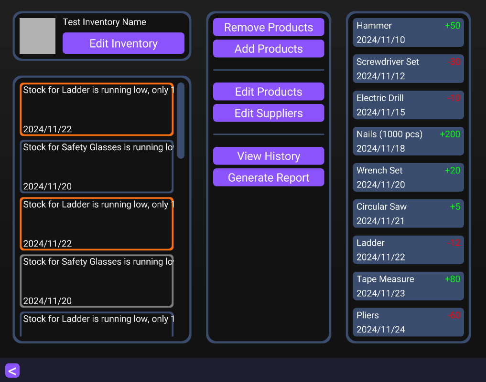

Silver Engine is a 3D game engine built from the ground up using C++ and Vulkan.
It's my first game engine and includes a fully functional editor, allowing users to develop games and write gameplay code directly in C++.
Originally created for fun and learning, it served as a sandbox where I could experiment with
rendering techniques and various systems.
Over time, it evolved into the core codebase for my personal projects, including
Glimmer Chain, which was successfully shipped to the public.
The codebase includes various core systems that replaces the standard C/C++ libraries.
When we think about memory management in C/C++, the usual suspects are malloc/free and smart pointers.
But that's just scratching the surface. Modern hardware and operating systems offer virtual memory, which does
far more than just isolate processes for safety. It also allows for continuous virtual memory ranges,
letting the OS map memory pages across RAM (and even the hard drive) transparently.
The problem with malloc, free, and the abstractions built on top of them is that they don't really align
with how programs actually use memory. While they're flexible for individual allocations, if you take a
closer look at your allocation patterns, you'll notice that most objects can be grouped together and share the same lifetime.
That's where arena allocators come in. An arena (or linear allocator) lets you allocate a group of objects that share a
lifetime, and then free them all at once with a single call when they're no longer needed.
Benefits of Arena Allocators:
-
High-performance allocation: You can reserve a large chunk of virtual address space (e.g. 32 GB), and allocations
only require incrementing a pointer. Committing more pages is handled as needed.
-
High-performance deallocation: Freeing all allocations at once is significantly faster than calling free repeatedly.
-
Ease of use: Traditional allocators require you to track every malloc with a matching free,
increasing the chance of memory leaks, double frees, or use-after-free bugs. With arenas, you simply
push memory and forget about it until the scope ends.
-
Explicit allocation context: Functions can take an arena as a parameter, making it clear where memory
should be allocated—useful for things like string manipulation.
-
Faster memory access: Memory allocated by an arena tends to be completely contiguous by default, improving cache coherency and reducing cache misses.
Much of my understanding of arena allocators comes from Ryan Fleury, who wrote an excellent post on the topic:
Untangling Lifetimes: The Arena Allocator
How Silver Engine Uses Arenas:
Silver Engine provides these arena allocators by default:
-
Static Arena: Freed only when the program exits. Used for memory that is effectively permanent (e.g. system state).
-
Frame Arena: Cleared at the end of each frame. Useful for temporary allocations that live during a single frame.
-
Scratch Arena: Acts as a per-thread temporary stack. Handy for short-lived intermediate operations.
The C++ standard library has become increasingly complex with each new version of the language.
It's built on top of a stack of features like RAII, operator overloading,
templates, manual memory management (new/delete), and smart pointers.
At some point in development, it becomes hard to understand what's really happening under the hood.
You might end up with subtle memory leaks, redundant allocations, or even serious safety issues without clear visibility.
Some languages like Rust attempt to solve these issues by introducing strict lifetime tracking,
but this often comes at the cost of added complexity and mental overhead for the programmer.
Instead of layering more abstractions, I prefer addressing the problem at its root. That's why
I built my own standard library functions, based on Arena allocators, avoiding unnecessary language
features and keeping things simple, explicit, and predictable.
Strings
Traditional C strings use null-terminated character arrays, which come with several drawbacks.
To determine the length of a string, you need to iterate through the entire buffer until a null character is found.
Taking slices is awkward, and if the null terminator is missing, due to a bug or corrupted data, it can lead to undefined
behavior or even fatal memory access errors.
C++ strings, on the other hand, manage memory internally using RAII, which introduces hidden allocations and
potential performance issues. They also make it easy to introduce subtle bugs, and taking a slice requires using
an entirely different data structure.
In Silver Engine, strings are simplified. They are not null-terminated, and they don't manage memory themselves.
Instead, when needed, string functions can allocate memory through an arena allocator. A string is
simply a slice: a pointer and a size. This makes strings easy to work with, efficient, and flexible.
Collections
In Silver Engine, collections are also custom-built. It includes hash tables, dynamic arrays,
string builders, static arrays, and even a space partitioning table. Most of these structures are arena-based,
allocating memory in blocks as needed for performance and simplicity.
This is also the only place where I use C++ templates, strictly for convenience.
Math
Games require a solid foundation in linear algebra, including vectors, matrices, and quaternions. These are essential
for handling transformations, physics simulations, and camera logic. Additionally, many physics systems rely on geometric
intersection tests, which are also part of this module and can be reused across different systems.
Random Number Generation
Pseudorandom number generators have a property that many programmers don't usually consider: they are deterministic.
This means that, given the same seed, they will always produce the same sequence of “random” numbers.
A good example of this in action can be found in Glimmer Chain,
where it's used for particle effects, and in Voxel Game, where it's used for terrain generation.
My random functions are based on the SplitMix algorithm. They use a combination of a fixed seed and a seed mask, which is
updated on every call to a random function. Both values are stored in a thread-local context, allowing deterministic behavior
while supporting multithreaded use.
u64 u64_random() {
u64 seed = context.seed ^ context.seed_mask;
u64 result = random_splitmix64(&seed);
context.seed_mask = seed;
return result;
}
u32 u32_random() {
return (u32)u64_random();
}
f32 f32_random() {
u32 v = u32_random() & 0xFFFFFF;
return (f32)v / (f32)0xFFFFFF;
}
f32 f32_random_max(f32 max) {
return f32_random() * max;
}
f32 f32_random_range(f32 min, f32 max) {
return min + f32_random() * (max - min);
}
Timing Functions
When using the C++ standard library for timing, you're often faced with a maze of classes, templates, and opaque functions.
Why should something as simple as measuring time feel so unnecessarily complex?
Silver Engine provides a clear and minimal set of functions and structs that have been more than enough for every use case I've encountered so far:
struct Date {
u32 year;
u32 month;
u32 day;
u32 hour;
u32 minute;
u32 second;
u32 millisecond;
};
struct {
u64 start_clock_counter;
u64 clock_frequency;
u64 frame_count;
f64 start_frame;
f32 delta_time;
u32 FPS;
f32 smooth_FPS;
u32 smooth_FPS_counter;
} timer;
u64 os_get_clock_counter(); // QueryPerformanceCounter on Windows
Date os_get_date();
f64 timer_now(); // Seconds since start of the program
u64 timer_seed(); // Used for non-deterministics behaviours on random functions
// Notice that timer_now() = (os_get_clock_counter() - timer.start_clock_counter) / timer.clock_frequency
u64 timer_calculate_cpu_frequency();
void timer_limit_fps(u32 frame_rate, f64 start_of_frame); // Sleeps the thread to match the given frame rate
The engine features a custom GraphicsAPI that wraps the internals of OpenGL, DirectX11, and Vulkan, enabling multiplatform support.
It also includes some rendering modules:
2D Immediate Mode Renderer
Uses a technique called batch rendering to efficiently draw sprites to the screen.
It supports both simple sprites and more advanced ones.
The advanced sprites have a variety of visual effects, such as rounded corners, borders, and color fades.
These are typically used in UI elements.
Below is a screenshot of a unfinished application built with Silver Engine:

Text
Text is one of the most underrated aspects of graphical applications.
We all expect clean text rendering across different resolutions, sizes, fonts, and even languages.
But building a robust text renderer that handles all of this dynamically is a real challenge.
Here's an overview of the steps involved in displaying text in Silver Engine:
- Start by selecting a font, usually in .ttf format.
- Define the set of characters you plan to use.
- Rasterize those characters into a texture using vector graphics and apply Signed Distance Fields (SDF).
- Store metadata for each glyph, including paddings and sizing info.
- For languages like Chinese with thousands of characters, this process must be repeated whenever new characters are needed.
- To render the text, iterate through all characters and calculate their positions on screen.
- Handle alignment, centering, and line wrapping as needed.
- Finally, use the character positions and the SDF atlas to draw each glyph on screen.
That's the basic workflow behind dynamically rendered, high-quality text.
Below is an example SDF texture extracted from Glimmer Chain:
Shader Compilation
All shaders must be compiled before execution, and this process is handled
manually through a shader compilation module in Silver Engine.
This module processes every .shader file and generates binaries for each supported
Graphics API, using dxcompiler under the hood.
A .shader file is a custom format designed for Silver Engine. It contains multiple
shader stages, such as vertex, pixel, and compute. All within the same file.
Over time, I implemented a wide range of features for the engine. However, many of them were later
removed as the engine evolved into more of a modular framework, allowing me to reuse components across different projects.
Below is a list of features that were implemented at various stages:
- 3D Mesh Rendering
- 2D Sprite Rendering
- Diffuse and Specular Lighting
- Cascaded Shadow Mapping
- Terrain Rendering
- CPU Retained Particle System
- Bloom Effect
- Screen Space Ambient Occlusion (SSAO)
- Generic Entity-Component System (ECS)
- C++ Game Code with Hot Reloading
- Sound Engine
- Immediate Mode UI
- 3D Physics (integrated with PhysX)
- Unity-like Editor